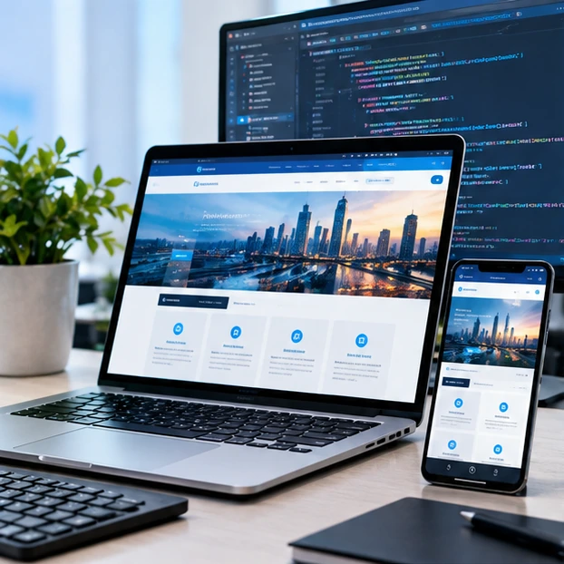
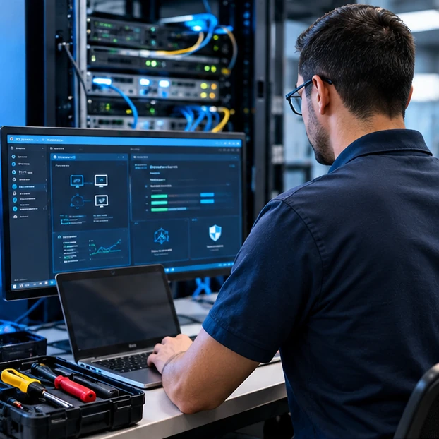
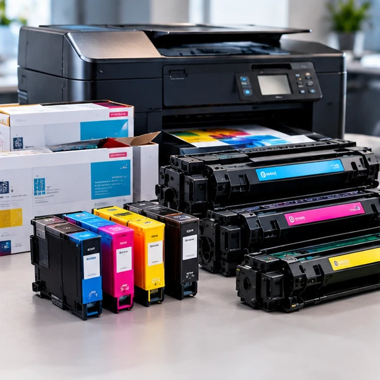
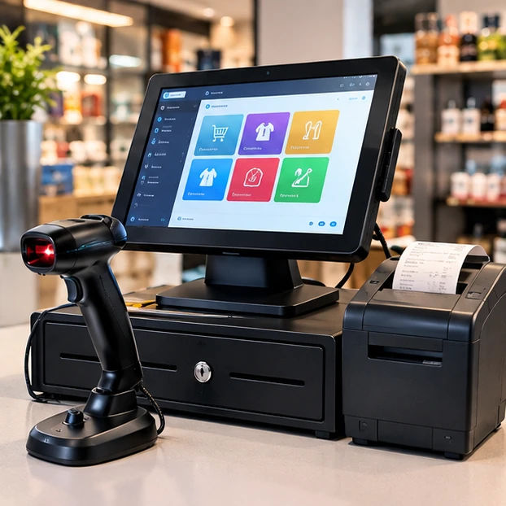

Desarrollo web
Páginas modernas, adaptables a móviles y diseñadas para presentar tu negocio con profesionalismo.
Conocer desarrollo web ↗En INKTONER WEB & SYSTEM reunimos servicios tecnológicos para negocios: diseño y desarrollo de páginas web, soporte técnico TI, consumibles para impresoras, sistemas POS y soluciones de ciberseguridad. Recibe orientación para elegir una opción acorde con tus necesidades.
Encuentra en un solo lugar servicios informáticos para tu negocio: creación de sitios web, mantenimiento y soporte de computadoras, tinta y tóner para impresión, sistemas de punto de venta y asesoría en seguridad informática.

Páginas modernas, adaptables a móviles y diseñadas para presentar tu negocio con profesionalismo.
Conocer desarrollo web ↗
Mantenimiento, diagnóstico, configuración y resolución de incidencias para mantener tus equipos operando.
Conocer soporte TI ↗
Consumibles para impresión y orientación para identificar la opción compatible con tu equipo.
Consultar consumibles ↗
Herramientas para ventas, cobros, inventario y operación diaria de tiendas y pequeños negocios.
Conocer POS y sistemas ↗Te ayudamos a identificar lo que necesitas y elegir una solución acorde con tu negocio, presupuesto y objetivos.
Información inicial para ayudarte a identificar el servicio adecuado.
Ofrecemos desarrollo de páginas web, soporte técnico TI, consumibles de impresión, sistemas POS y servicios de ciberseguridad. Escríbenos para confirmar disponibilidad y alcance según tu necesidad.
Sí. Puedes contactarnos directamente por WhatsApp o correo electrónico. Describe el equipo, producto o servicio que necesitas para que podamos orientarte.
Comparte la marca y el modelo de tu impresora o una fotografía de la etiqueta del cartucho. Así podremos ayudarte a revisar la compatibilidad antes de cotizar.
Podemos revisar solicitudes de mantenimiento, configuración y diagnóstico de equipos. El alcance y el costo se confirman según el problema y el servicio requerido.
Cuéntanos qué necesitas. Puedes escribirnos por WhatsApp o correo electrónico, o preparar tu solicitud desde este formulario.
Solicita información sin compromiso y cuéntanos qué necesita tu negocio.